무선설비산업기사 (2011-09-25 기출문제)
1과목: 디지털 전자회로
1. 전원공급기 필터로서 정류기의 출력저항과 병렬로 연결하여 구성하는데 가장 적합한 소자는?
- 초크 코일
- 마일러 콘덴서
- 전해 콘덴서
- 동조용 코일
(정답률: 68%)

2. 전원 정류회로의 리플 함유율을 적게하는 방법으로 적당하지 않은 것은?
- 출력측 평활형 콘덴서의 정전용량을 작게 한다.
- 평활형 초크 코일의 인덕턴스를 크게 한다.
- 입력측 평활용 콘덴서의 정전용량을 크게 한다.
- 교류입력전원의 주파수를 높게 한다.
(정답률: 80%)
3. 평활회로를 통과한 출력전압이 V=8+2√2sin(wt)[V]일 때, 맥동률은 얼마인가?
- 15[%]
- 25[%]
- 40[%]
- 50[%]
(정답률: 64%)
4. 이미터접지 트랜지스터 증폭기회로에서 입력신호와 출력신호의 전압 위상차는 얼마인가?
- 0°의 위상차가 있다.
- 180°의 위상차가 있다.
- 90°의 위상차가 있다.
- 270°의 위상차가 있다.
(정답률: 89%)
5. FET 증폭기에 있어서 |AV|=30, Cgd=1[pF], Cgs=10[pF]일 때의, 등가입력용량은 얼마인가?
- 27[pF]
- 41[pF]
- 48[pF]
- 84[pF]
(정답률: 82%)
6. 2단 이상의 증폭기에서 잡음을 줄일 수 있는 가장 효과적인 방법은?
- 종단 증폭기의 이득은 첫단 증폭기에 비해 가능한 낮게 설계한다.
- 첫단 증폭기는 가능한 이득이 큰 증폭기로 구성한다.
- 첫단 증폭기를 트랜지스터(쌍극성 트랜지스터) 증폭기로 구성한다.
- 첫단 증폭기를 저잡음을 발생하는 FET 증폭기로 구성한다.
(정답률: 84%)
7. 이상적인 연산증폭회로의 조건으로 틀린 것은?
- 개방상태에서 입력 임피던스는 무한대이다.
- 개방 루프(Open Loop) 이득이 무한대이다.
- CMRR 값이 1이다.
- 입력옵셋 전압이 0이다.
(정답률: 68%)
8. 다음 중 발진 조건에 대한 설명으로 가장 맞는 것은?
- 정궤환을 해야 한다.
- 부궤환을 해야 한다.
- 이미터 안정저항을 설치하여야 한다.
- 바이패스 콘덴서를 설치하여야 한다.
(정답률: 84%)
9. 수정 발진회로에서 수정 진동자의 전기적 직렬 공진 주파수를 fS, 병렬 공진 주파수를 fP 라 할 때, 가장 안정된 발진을 하기 위한 조건은? (단, fa는 발진 주파수이다.)
- fP ＜ fa ＜fS
- fa ＞ fS
- fS ＜ fa ＜ fP
- fa ＞fP
(정답률: 90%)
10. 아날로그 TV의 영상신호 전송에 사용되는 방식으로 한 쪽 측파대의 일부를 남겨 통신하는 방식은?
- VSB
- DSB
- SSB
- FSK
(정답률: 85%)
11. 펄스의 주기와 진폭은 일정하고, 펄스의 폭을 입력신호에 따라 변화시키는 변조 방식은?
- PAM(Pulse Amplitude Modulation)
- PWM(Pulse Width Modulation)
- PPM(Pulse Position Modulation)
- PCM(Pulse Code Modulation)
(정답률: 81%)
12. RC 직렬회로에서 R=500[kΩ], C=2[μF]이다 C의 양단이 출력이고 입력단에 20[V]를 인가하였다. 입력을 인가한 시점부터 출력이 12.64[V]가 되는 시간은?
- 10[msec]
- 20[msec]
- 1[sec]
- 2[sec]
(정답률: 73%)
13. 하강시간(Fall Time)은 펄스 진폭의 몇 [%]부터 몇 [%]까지 떨어지는데 걸리는 시간인가?
- 90~0[%]
- 90~10[%]
- 100~10[%]
- 100~0[%]
(정답률: 94%)
14. 최대 표현 숫자가 256 종류인 경우 이를 표현하기 위하여 몇 비트의 디지트가 필요하게 되는가?
- 5비트
- 6비트
- 7비트
- 8비트
(정답률: 79%)
15. 디지털 IC 계열에 대한 특성이 다음 표와 같다면, 논리장치인 CHIP의 전력소모를 줄이기 위하여 가장 낮은 전력을 소모하는 것은 어느 것인가?
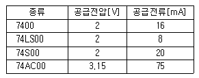
- 7400
- 74LS00
- 74S00
- 74AC00
(정답률: 91%)
16. 다음의 진리표에 대한 논리회로 기호로 올바른 것은?
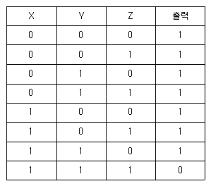
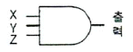
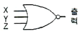
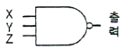
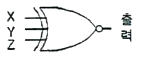
(정답률: 84%)
17. 다음 중 비동기식 카운터에 대한 설명으로 틀린 것은?
- 동기식 카운터에 비해 입력신호의 전달지연시간이 길다.
- 동기식에 비해 논리상의 오차 발생비율이 많다.
- 구조상으로 동기식에 비해 회로가 간단하다.
- 같은 클럭펄스에 의해 트리거 된다.
(정답률: 77%)
18. 비동기식 카운터의 플립플롭 구성에 대한 설명으로 틀린 것은?
- 플립플롭 2개를 사용하여 16진 카운터 계수를 나타낸다.
- T 플립플롭으로 구성된다.
- J-K 플립플롭으로 구성할 때 입력 J=K=1로 한다.
- T 플립플롭으로 구성할 때 입력 T=1로 하여 Toggle 상태로 한다.
(정답률: 76%)
19. 다음 중 멀티플렉서의 실현에 대한 내용으로 틀린 것은?
- 여러 개의 데이터 입력을 적은 수의 채널로 전송한다.
- n개의 입력선과 2n개의 선택선으로 구성한다.
- 선택선은 비트조합에 의해 입력중 하나가 선택된다.
- Data Selector라고도 할 수 있다.
(정답률: 78%)
20. 반가산기(Half adder)에 대한 논리회로도로 옳은 것은? (X, Y: 입력, C: Carry, S: 합)
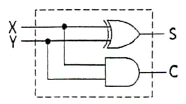
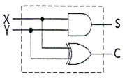
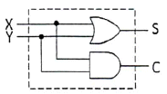
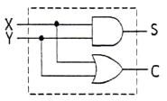
(정답률: 80%)
2과목: 무선통신 기기
21. 슈퍼헤테로다인 수신기에 있어서 고주파 증폭회로의 역할이 아닌 것은?
- S/N비 개선
- 주파수안정도 개선
- 영상혼신 개선
- 수신기 감도 향상
(정답률: 57%)
22. AM 수신기의 특성을 나타내는 중요 요소로써 적합하지 않은 것은?
- 감도
- 변조도
- 선택도
- 안정도
(정답률: 73%)
23. DSB 통신 방식과 비교한 SSB 송신기의 장점이 아닌 것은?
- 점유주파수대폭이 1/2로 축소된다.
- 적은 송신 전력으로 통신이 가능하다.
- 회로 구성이 간단하다.
- 신호대 잡음비가 개선된다.
(정답률: 81%)
24. 주파수 변조(FM) 수신기의 구성요소가 아닌 것은?
- 국부 발진기
- 진폭 제한기
- 프리엠퍼시스
- 디엠퍼시스
(정답률: 68%)
25. 변조속도가 2,400[Baud]일 때 4상식 위상변조 방식을 사용하는 경우의 데이터 신호 속도는 몇 [bps]인가?
- 2,400[bps]
- 4,800[bps]
- 7,200[bps]
- 9,600[bps]
(정답률: 78%)
26. 다음 중 주파수분할방식(FDM)에 대한 시분할 방식(TDM)의 특징으로 맞지 않는 것은?
- 통화로당 점유주파수대폭이 넓다.
- 회선의 분기가 용이하다.
- 특성이 양호한 필터가 많이 필요하다.
- 누화잡음을 적게 할 수 있다.
(정답률: 62%)
27. 정지궤도(GEO) 위성에 관한 설명으로 바른 것은?
- 위성의 고도가 약 500~2,000[km]이다.
- 이동통신 위성에 많이 사용된다.
- 극지방통신이 가능하며, 전파지연이 거의 없다.
- 대규모 위성안테나와 대형 발사체가 필요하다.
(정답률: 59%)
28. 통신시스템에서 신호강도와 전송된 후의 신호강도를 측정하는 단위로 [dB]를 사용하는데 이때 등방성 안테나 이득을 표현할 때의 단위는?
- dBi
- dBm
- dBW
- dB
(정답률: 86%)
29. 다음 중 위성통신 등에서 하나의 음성채널에 대하여 하나의 단일 반송파를 할당하여 전송하는 방식은?
- MCPC
- SCPC
- DSI
- FDMA
(정답률: 56%)
30. 동일한 CDMA 주파수를 사용하는 동일 기지국내 섹터간 핸드오프에 해당되는 것은?
- 중간(middle) 핸드오프
- 소프터(softer) 핸드오프
- 하드(hard) 핸드오프
- 아날로그 핸드오프
(정답률: 87%)
31. 다음 위성통신에 사용되는 전원계의 구성 중 해당되지 않는 것은?
- 전원 발생부
- 축전지
- 전원 공급부
- 전원 제어부
(정답률: 57%)
32. 다음 중 축전지의 충전의 종류가 아닌 것은?
- 단순 충전
- 평상 충전
- 균등 충전
- 부동 충전
(정답률: 89%)
33. 전원 전압의 변동 및 온도 변화 등에 의한 영향을 받지 않도록 하는 회로를 무엇이라 하는가?
- 안정화 전원회로
- 평활 회로
- 정류 회로
- 발진 회로
(정답률: 84%)
34. 입력 교류전력이 60[W]이고, 출력 직류전력이 120[W]일 경우 정류효율은 몇 [%]인가?
- 50
- 100
- 200
- 300
(정답률: 74%)
35. 120[MHz]인 반송파를 20[kHz]인 신호파로 FM 변조했을 때 최대주파수 편이가 100[kHz]이면 변조지수는 얼마인가?
- 6
- 5
- 4
- 3
(정답률: 79%)
36. FM 송신기의 주파수 특성 측정에 필요하지 않는 것은?
- 저주파 발진기
- 저항 감쇠기
- 의사 안테나
- 고주파 출력계
(정답률: 43%)
37. 다음 중 송신기의 RF 간섭 및 변조파 특성을 측정하기에 가장 적합한 계측기는?
- 오실로스코프
- 스펙트럼 분석기
- 레벨미터
- 멀티미터
(정답률: 85%)
38. 수신기의 종합 특성을 결정하는 파라미터로서 혼신 및 간섭 등을 어느 정도까지 분리 및 제거할 수 있는가의 능력을 나타내는 것은 무엇인가?
- 감도
- 선택도
- 충실도
- 안정도
(정답률: 85%)
39. 다음 그림은 FM 송신기의 신호대 잡음비의 측정구성도를 나타낸 것이다. (A)에 들어가야 하는 것은?
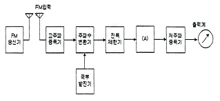
- 직선검파기
- 주파수변별기
- 가변감쇠기
- 수신기
(정답률: 88%)
40. 특성임피던스 Zo가 75[Ω]인 선로 종단에 Zo보다 적은 부하저항을 접속한 후 송신단자에서 신호를 인가하였다. 이때 선로상의 파형을 측정하였더니 최고전압이 25[V], 최저전압이 5[V]이었다. 이 선로의 전압정재파비(VSWR)은 얼마인가?
- 4
- 5
- 6
- 8
(정답률: 85%)
3과목: 안테나 개론
41. 전계와 자계에 대한 설명으로 바른 것은?
- 자기력선은 발산이 있으나 전기력선은 없다.
- 전계와 자계 모두에 에너지 보존법칙이 성립한다.
- 전계는 전류 및 자하에 의하여 형성된다.
- 전기력선은 항상 폐곡선을 형성한다.
(정답률: 90%)
42. Maxwell 방정식을 이루는 법칙이 아닌 것은?
- 패러데이(Faraday) 법칙
- 암페어(Ampere) 법칙
- 스넬(Snell) 법칙
- 가우스(Gauss) 법칙
(정답률: 91%)
43. 자유공간에서 단위면적을 단위시간에 통과하는 전파에너지가 3[μW/m2 ]이었다. 이때 자유공간의 전계강도는 약 얼마인가?
- 6.45[mV/m]
- 16.81[mV/m]
- 33.63[mV/m]
- 45.65[mV/m]
(정답률: 74%)
44. 다음 중 공중선과 급전선간 부정합시의 문제점이 아닌 것은 어느 것인가?
- 송신기의 동작이 불안정해진다.
- 반사손실(부정합손실)이 증가한다.
- 급전선의 절연이 파괴된다.
- 최대 전송전력이 증가한다.
(정답률: 75%)
45. 특성 임피던스가 75[Ω]인 급전선상의 VSWR (전압정재파비)가 4라면 반사계수는 얼마인가?
- 0.2
- 0.4
- 0.6
- 0.8
(정답률: 87%)
46. 방송 주파수 100[MHz]용 공중선의 비동조 급전선의 끝을 단락, 접지한 75[cm]의 트랩을 접속할 때 일어나는 현상과 관련없는 것은?
- 시스템의 신호대 잡음비가 개선된다.
- 정재파의 발생으로 전송효율이 증가한다.
- 전력 분배 회로망에서 진폭과 위상의 오차를 감소시킨다.
- 발사 전파의 세기에 변화는 없다.
(정답률: 53%)
47. 동축 급전선과 비교한 도파관의 특징이다. 옳지 않은 것은?
- 차단파장이 없다.
- 유전체손실이 적다.
- 방사손실이 없다.
- 전송전력이 크다.
(정답률: 61%)
48. 아이솔레이터(Isolator)에 대한 설명으로 바르지 못한 것은?
- 아이솔레이터는 마이크로파 자성재료, 정합용 콘덴서, 자석 케이스, 저항 등으로 구성된다.
- 집중 정수형 아이솔레이터는 파장에 비례해서 페라이트의 크기를 늘려야 한다.
- 집중소자 아이솔레이터의 경우 코일의 길이는 아이솔레이터 동작 주파수에서의 파장보다 훨씬 짧아야 한다.
- 감쇠기 판(Vane)은 저항성 소재의 병렬 구조로 되어있다.
(정답률: 42%)
49. 미소 다이폴(hertz dipole)의 전계강도를 구하는 공식으로 맞지 않는 것은? (단, P: 복사전력, L: 안테나 길이, d: 안테나로부터 떨어진 거리)
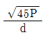
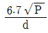
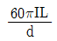
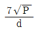
(정답률: 57%)
50. λ/4의 수직접지 안테나에 주파수 2[MHz]이고, 급전점의 최대 전류가 10[A]를 흘렸을 때 도선상의 25[m]인 지점에서의 전류는 얼마인가?
- 3[A]
- 5[A]
- 7[A]
- 9[A]
(정답률: 61%)
51. 다음 중 지향성 공중선의 설명으로 가장 적합한 것은?
- 무선전자파 에너지를 모든 방향으로 똑같이 잘 송수신할 수 있는 공중선
- 상공파로 전파되는 전자파 에너지를 송수신할 수 없는 공중선
- 주로 단일 방향의 전자파 에너지를 송수신하는 공중선
- 송신전력을 측정하기 위해 방향성 결합기를 사용하는 공중선
(정답률: 69%)
52. 위성통신 지구국용 고이득 저잡음 안테나로써 회전 쌍곡선 곡면을 부반사경으로 사용하는 안테나는?
- Horn-reflector 안테나
- Parabolic 안테나
- Cassegrain 안테나
- Corner reflector 안테나
(정답률: 66%)
53. 지구국 수신기의 수신능력을 나타내는 것은?
- 안테나의 실효면적과 실제면적의 비
- 반송파 전력과 잡음의 비
- 안테나의 이득과 수신기의 잡음온도의 비
- 비트에너지대 잡음전력의 비
(정답률: 57%)
54. 다음 중 직접파를 이용하여 통신하는 방식은?
- 중파통신
- 중단파통신
- 단파통신
- 마이크로파통신
(정답률: 63%)
55. 다음 중 VHF와 UHF의 주파수 범위는?
- VHF: 300~3000[MHz], UHF: 30~300[MHz]
- VHF: 3~30[MHz], UHF: 30~300[MHz]
- VHF: 30~300[MHz], UHF: 300~3000[MHz]
- VHF: 30~300[MHz], UHF: 3~30[MHz]
(정답률: 89%)
56. 초단파대 전파가 전파될 때, 그 사이에 존재하는 산악 회절파의 특징 중 잘못된 것은?
- 아주 적은 손실로 초단파대 초가시거리 통신을 수행할 수 있다.
- Fading이 적고 안정하다.
- 지리적 제한을 받지 않는다.
- 간편하고 시설 및 운영비의 점에서 유리하다.
(정답률: 76%)
57. 어느 송ㆍ수신소 사이의 MUF(Maximum User Frequency)가 10[MHz]일 때 FOT(Frequency of Optimum Transmission)는 얼마인가?
- 6.55[MHz]
- 7.5[MHz]
- 8.5[MHz]
- 9.5[MHz]
(정답률: 84%)
58. 전리층 반사파는 입사각이 어느 정도 이상으로 커야만 지구로 돌아온다. 이때 전리층 반사파가 최초로 지표면에 도달하는 지점과 송신점 간의 거리를 무엇이라 하는가?
- 불감지대(Skip Zone)
- 프리즈넬 존(Fresnel Zone)
- 블랭킷(Blanket) 에리어
- 도약거리(Skip Distance)
(정답률: 89%)
59. 단파가 전리층을 통과하거나 반사될 때, 전자가 공기분자와 충돌로 인하여 감쇠량이 변하여 발생하는 페이딩은?
- 간섭성 페이딩
- 편파성 페이딩
- 흡수성 페이딩
- 선택성 페이딩
(정답률: 77%)
60. 다음 중 도약성 페이딩의 방지 방법으로 옳지 않은 것은?
- 수신기 내에 AGC 회로나 진폭제한기 사용
- 중파 송신일 때 페이딩 방지용 공중선 사용
- 다이버시티 수신법 사용
- 전파 흡수체 사용
(정답률: 63%)
4과목: 전자계산기 일반 및 무선설비기준
61. 중앙처리장치가 기억장치 혹은 I/O 장치와의 사이에 신호를 전송하기 위한 신호선들의 집합은?
- 시스템 버스(system bus)
- 주소 버스(address bus)
- 데이터 버스(data bus)
- 제어 버스(control bus)
(정답률: 80%)
62. 주소 형식에 따른 컴퓨터 구조에서 0-주소 명령어 형식은?
- 어큐뮬레이터(accumulator) 구조
- 범용 레지스터(GPR) 구조
- 큐(queue) 구조
- 스택(stack) 구조
(정답률: 81%)
63. 연산방식에 대한 설명 중 맞는 것은?
- 직렬 연산 방식은 연산 속도가 빠르다.
- 직렬 연산 방식은 하드웨어(hardware)가 복잡하다.
- 병렬 연산 방식은 연산 속도가 빠르다.
- 병렬 연산 방식은 하드웨어(hardware)가 간단하다.
(정답률: 75%)
64. ASCII-8 코드에 대한 설명 중 틀린 것은?
- 컴퓨터의 동작 제어에 관한 코드를 포함하고 있다.
- 패리티 비트를 포함하지 않고 있다.
- 8비트의 정수배 길이인 단어를 가지는 컴퓨터에 사용하기 편리하다.
- 그래픽 기호를 나타내는 코드를 포함하고 있다.
(정답률: 81%)
65. 은행, 식당 또는 버스 정류장에서 서비스를 받기 위해 줄을 서있는 원리와 같은 자료구조는?
- 스택(stack)
- 큐(queue)
- 데크(deque)
- 배열순례(array traversal)
(정답률: 76%)
66. 컴퓨터 사용자가 컴퓨터의 본체 및 각 주변장치를 가장 능률적이고 경제적으로 사용할 수 있도록 하는 프로그램은?
- Operating System
- Marco
- Compiler
- Loader
(정답률: 83%)
67. 다음 중 일반 컴퓨터 형태가 아닌 주로 회로 기판 형태의 반도체 기억소자에 응용 프로그램을 탑재하여 컴퓨터의 기능을 수행하는 시스템은?
- 임베디드 시스템
- 분산처리 시스템
- 병렬처리 시스템
- 멀티프로세싱 시스템
(정답률: 86%)
68. 다음 스케줄링 기법 중에서 성격이 다른 것은?
- 라운드로빈 스케줄링
- SRT 스케줄링
- SJF 스케줄링
- MFQ 스케줄링
(정답률: 52%)
69. 마이크로프로세서의 레지스터 중 현재 수행 중이거나 다음 클럭 사이클에 수행해야 할 명령의 주소를 가리키는 것은 무엇인가?
- ACC(accumulator)
- stack
- PC(program counter)
- DLL
(정답률: 77%)
70. 다음 중 인터럽트의 우선순위가 가장 높은 것은 무엇인가?
- 전원 reset 인터럽트
- 입출력 인터럽트
- 외부 인터럽트
- SVC(Supervisor call)
(정답률: 88%)
71. 다음 중 전파법은?
- 방송통신위원회 훈련이다.
- 대통령령이다.
- 법률이다.
- 무선통신사업자의 약관이다.
(정답률: 84%)
72. 전파법의 용어 중 틀리게 설명된 것은?
- 주파수분배라 함은 특정한 주파수의 용도를 정하는 것을 말한다.
- 우주국이라 함은 인공위성에 개설한 무선국을 말한다.
- 무선국이라 함은 방송 수신만을 목적으로 하는 것도 포함된다.
- 위성궤도라 함은 우주국의 위치 또는 궤적을 말한다.
(정답률: 55%)
73. 다음 중 준공검사를 받지 아니하고 운용할 수 있는 무선국으로 틀린 것은?
- 30와트 미만의 무선설비를 시설하는 어선의 선박국
- 국가안보 또는 대통령 경호를 위하여 개설하는 무선국
- 공해 또는 극지역에 개설한 무선국
- 정부 또는 기간통신사업자가 관련법에 의하여 비상통신을 위하여 개설한 무선국으로서 상시 사용하는 무선국
(정답률: 47%)
74. 40톤 이상의 어선인 의무선박국의 정기검사 시기는 유효기간 만료일 전후 몇 개월 이내에 실시하여야 하는가?
- 1개월
- 2개월
- 3개월
- 6개월
(정답률: 53%)
75. 무선국 운용시 직접 통신보안에 관한 사항을 준수하여야 하는 자로 볼 수 없는 것은?
- 무선국 허가자
- 무선국 시설자
- 무선통신업무에 종사하는 자
- 무선설비를 이용하는 자
(정답률: 59%)
76. 방송통신위원회가 수행하는 전파 감시의 목적으로 볼 수 없는 것은?
- 전파의 효율적 이용 촉진을 위하여
- 혼신의 신속한 제거를 위하여
- 전파 이용 질서의 유지 및 보호를 위하여
- 주파수에 대한 사용료를 부과, 징수하기 위하여
(정답률: 86%)
77. 인증이 면제되는 방송통신기자재에서 적합성평가의 전부가 면제되는 기자재에 해당되지 않는 항은?
- 판매를 목적으로 하지 않고, 전시회, 국제경기대회 진행 등 행사에 사용하기 위한 기자재
- 국내에서 사용하지 아니하고 국외에서 사용할 목적으로 제조하거나 수입하는 기자재
- 전시회, 국제경기대회 등 행사에 사용하기 위한 것으로 판매를 목적으로 하는 정보통신기기
- 외국의 기술자가 국내산업체 등의 필요에 의하여 일정기간 내에 반출하는 조건으로 반입하는 기자재
(정답률: 68%)
78. 다음 중 적합성평가를 받아야 하는 선박국용 양방향 무선전화장치의 전파형식 기호로 맞는 것은?
- F3E 및 G3E
- R3E 및 J3E
- A3E 및 R3E
- G3E 및 A3E
(정답률: 72%)
79. 무선 설비를 보호하기 위한 보호 장치로서 전원 회로의 퓨즈 또는 차단기는 공중선 전력이 얼마 이상일 때 갖추어야 하는가?
- 5와트 이상
- 7.5와트 이상
- 10와트 이상
- 12.5와트 이상
(정답률: 81%)
80. 무선국의 시설자는 통신상 보안을 요하는 사항에 대하여 통신보안용 약호를 정한 후 누구의 승인을 얻어 사용하여야 하는가?
- 전파진흥협회장
- 국립전파연구원장
- 중앙전파관리소장
- 한국방송통신전파진흥원장
(정답률: 80%)